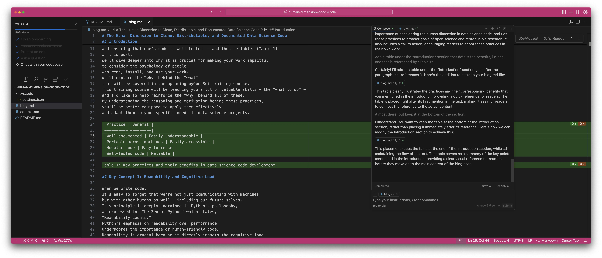
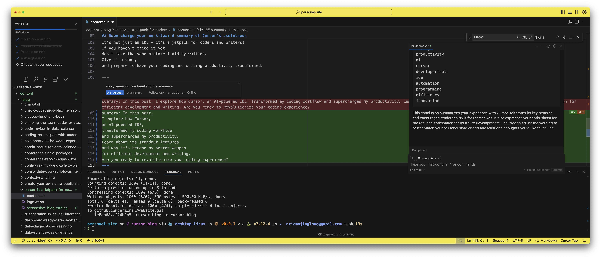

Eric J Ma's Website
written by Eric J. Ma on 2024-09-14 | tags: coding productivity ai cursor developertools ide automation programming efficiency innovation
Last Friday (September 6th), I finally took the plunge and downloaded Cursor for the first time. I know, I know—I was late to the party. Looking back, I can't believe it took me this long to give it a try. But boy, am I glad I did!
To put Cursor through its paces, I decided to build something out of curiosity: an app that takes a plain text description of a calendar event and spits out an ICS file ready for import into my calendar. I leveraged LlamaBot's StructuredBot to translate natural language into the ICS file format. Now, I'll be the first to admit that CSS isn't my strong suit, so I turned to Claude 3.5 Sonnet (Cursor's default language model) to style it for me using Bootstrap.
But I didn't stop there. I asked Cursor to help me implement a login page, email-based authentication (to avoid storing passwords), and user sessions to keep multiple simultaneous users from interfering with each other. The kicker? I accomplished all of this in under four hours of actual work time (not counting breaks to entertain the kids).
Since that initial project, Cursor has become an integral part of my workflow. Take this blog post, for instance. I started with a rough outline and some stream-of-consciousness narration, then asked Cursor to flesh it out into a coherent article. I've also used it to improve LlamaBot, following a similar workflow: declare what I want, review the proposed code changes, and iterate.
I even attempted to create an email version of my calendar event generator. While I hit a snag with timeout issues, I was still able to get it to return a calendar invite successfully.
Cursor: A game changer for coding productivity
So, what makes Cursor stand out? For me, it boils down to four key features:
- The intuitive composer UI
- Its ability to show a diff of proposed file changes
- The capability to edit multiple files simultaneously
- Most importantly, its accuracy in inserting diffs in the right places (I estimate GitHub Copilot misses the mark about 20% of the time)

Figure 1: Screenshot of the Composer UI in action
But wait, there's more! Cursor's user interface is full of delightful surprises. As you interact with the AI, you'll notice it starts to anticipate your needs, surfacing contextual suggestions that can save you even more time.
For instance, I asked Cursor to add line breaks to my blog content. After applying the change to the first paragraph using Command+K, Cursor proactively suggested extending the same formatting to the next three paragraphs. With a single tab press, the changes were instantly applied across all four paragraphs. It was a moment of pure magic that left me thinking, "Wow, this is absolutely incredible!"

Figure 2: Screenshot of inline edits in action
These intuitive features demonstrate Cursor's ability to not just follow instructions, but to understand the broader context of your work. It's this level of intelligent assistance that truly sets Cursor apart from other coding tools.
Now, I want to be clear: I'm not being paid by Cursor to sing its praises. I genuinely believe it's a game-changer. In my experience, it's significantly more effective than GitHub Copilot. And when paired with macOS's dictation feature, I can breeze through tasks like writing this blog post with unprecedented speed and ease.
Supercharge your workflow: A summary of Cursor's usefulness
Let's recap the key points that make Cursor a game-changer for coding productivity:
- Intuitive composer UI for seamless interaction
- Accurate diff display of proposed file changes
- Multi-file editing capabilities
- Precise code insertion (outperforming GitHub Copilot)
- Contextual suggestions that anticipate your needs
- Intelligent understanding of your work's broader context
These features combine to create a powerful tool that not only follows instructions but enhances your entire coding and writing process. Whether you're crafting code or composing blog posts, Cursor acts as your intelligent assistant, streamlining your workflow and boosting your productivity to new heights.
In short, Cursor has quickly become my go-to tool for coding productivity. I think of it as more than just an IDE; to me, it's a jetpack for coders and writers! If you haven't tried it yet, don't make the same mistake I did by waiting. Give it a shot, and prepare to have your coding and writing productivity transformed.
Addendum
I wanted to address some commentary I've heard about Cursor's Composer view. In particular, Chris Albon on Twitter has noted how Cursor + Composer can make large-scale mistakes across multiple files in the codebase. I've observed this myself several times as well, though I also noticed it primarily occurred in situations where my requests were vaguely worded and I blindly accepted the changes without review. Granted, reviewing large-scale changes is challenging. However, I still believe the Composer UI is a net positive if we know how to effectively guide our interactions with the underlying LLM model. This means scoping down our requests to be more precise and asking for smaller and more well-defined changes. This resonates with what Chris mentions as "keep[ing] them on a short lease to be useful".
Cite this blog post:
@article{
ericmjl-2024-cursor-coders,
author = {Eric J. Ma},
title = {Cursor is a jetpack for coders},
year = {2024},
month = {09},
day = {14},
howpublished = {\url{https://ericmjl.github.io}},
journal = {Eric J. Ma's Blog},
url = {https://ericmjl.github.io/blog/2024/9/14/cursor-is-a-jetpack-for-coders},
}
I send out a newsletter with tips and tools for data scientists. Come check it out at Substack.
If you would like to sponsor the coffee that goes into making my posts, please consider GitHub Sponsors!
Finally, I do free 30-minute GenAI strategy calls for teams that are looking to leverage GenAI for maximum impact. Consider booking a call on Calendly if you're interested!